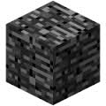

Oak Wood
Spruce Wood
Birch Wood
Jungle Wood
Leaves
Oak Leaves
Spruce Leaves
Birch Leaves
Jungle Leaves
Typs Of Sandstone!
Chiseled Sandstone
Smooth Sandstone
Granite
The granite block is a new block added in 1.8
The picture:
Polished Granite
Polished Granite is a block which is a Granite just polished.
The picture
Diorite
Diorite is a block that you can only get in creative!
Picture
Polished Diorite
Polished Diorite is Diorite just polished!
Picture

Andesite
Andesite is a block you can only get in creative
Picture
Dirt
The dirt block is a basic block that by defualt it spawns on the ground
The picture
Stone
The stone block is a common block found underground!
The picture
Polished Andesite
Polished Andesite is Andesite just polished!
The Picture

Grass
Grass is a block just like dirt!
Picture
Coarse Dirt
Coarse Dirt is a block which dosent allow any plants to grow on it!
Picture

Podzol
Podzol is a block which looks a bit diffrent to grass!
Picture
Cobblestone
Cobblestone is a block that stone gives you unless you have the enchantment "Silk Touch"!
Picture
Oak Wood Plank
Oak Wood Plank is a common block used for building you get it from punching oak wood!
Picture

Spruce Wooden Plank
Spruce Wood Plank is a block which is a oak wood plank just a diffrent colour
The Picture

Birch Wooden Plank
Birch Wood Plank is a plank which is the same as the birch wood plank just a diffrent colour
The picture

Jungle Wooden Plank
Jungle Wood Plank is a block which is like the oak wood plank just a diffrent colour!
Picture

Acacia Wooden Plank
Acacia Wood Plank is just the same as oak wooden plank just a diffrent colour!
Picture

Dark Oak Wooden Plank
Dark Oak Wood Plank is a plank which is the same as the birch wood plank just a diffrent colour
Picture

Oak Sapling
Oak Sapling is a sapling that when you place it on the ground and give it water it will grow into a oak tree!
Picture

Spruce Sapling
Spruce Sapling is a sapling that when you place it on the ground and give it water it will grow into a Spruce tree!
The Picture:

Birch Sapling
Birch Sapling is a block which if you place it down and give it water it will give you a Birch tree!
Picture

Jungle Sapling
Jungle Sapling is a block which if you place it down and give it water it will give you a Jungle tree!
Picture

Acacia Sapling
Acacia Sapling is the same as an oak sapling just gives you an Acacia tree!
Picture

Dark Oak Sapling
Dark Oak Sapling is basicly the same as a Oak sapling just gives you a Dark Oak Sapling tree!
Picture

Bedrock
Bedrock is a block you cant destroy in survival mode but, you can break it in creative mode!
Picture
Water
Water is a powerfull block used to water plants and make posions!
Picture
Lava
Lava is a block which can burn you if you are in survival mode but not in creative mode so dont touch it!
Picture
Sand
Sand is a block which falls, if it falls on you it can suffocate you!
Picture
Red Sand
Red Sand is sand just red!
Picture

Gravel
Gravel is basicly sand just a diffrent colour!
Picture
Gold Ore
Gold Ore is a block which is a block which when you mine it it gives you gold ore
Picture

Iron Ore
Iron Ore is a powerful ore which a lot of players find of there 2nd night if you mine it it will give you iron ore!
Picture

Coal Ore
Coal ore is usaly found on your 1st nigt it is used to make torches when you mine it will give you Coal ore!
Picture

Oak Wood
Oak Wood is a common found block on oak wood trees!
Picture

Spruce Wood
Spruce Wood is the same as oak wood just a diffrent colour!
Picture:

Birch Wood
Birch Wood is oak wood just a diffrent colour
Picture:

Jungle Wood
Jungle Wood is just oak wood just a diffrent colour!
Picture

Oak Leaves
Oak Leaves are blocks that spawn on oak trees!
Picture:

Spruce Leaves
Spruce Leaves are the same as oak trees just a diffrent colour and a diffrent tree!
Picture:

Birch Leaves
Birch Leaves is the same as oak leaves just a diffrent colour and a diffrent tree!
Picture

Jungle Leaves
Jungle Leaves is the same as oak leaves just a diffrent colour and a diffrent tree!
Picture

sponge
sponge is like a real sponge it will soak up 1 block of water then it will go to its "wet" state!
Picture
Glass
Glass is just like real glass but when you greak it it will not give itself back!
Picture
Lapis Lazuli Ore
Lapis Lazuli Ore is a ore which when you mine it it will give you itself!
Picture

Lapis Lazuli Block
Lapis Lazuli Block is a block crafted from Lapis ore!
Picture

Dispenser
Dispensers are things where when you put in arrows or posions and power it with redstone it will shoot it!
Picture
Sandstone
Sandstone is a block crafted with sand
Picture
Chiseled Sandstone
Chiseled Sandstone is sandstone just chiseled!
Picture:

Smooth Sandstone
Smooth Sandstone is sandstone just smooth!
Picture:

Note Block
Note Block are blocks where when you power it with redstone it will make a sound!
picture

Bed
The Bed is a block where when you sleep in it it will turn day to night!
Picture:
Detector Rail
Detector Rail is a block where when a minecart goes over it it will make a redstone signal!
Picture